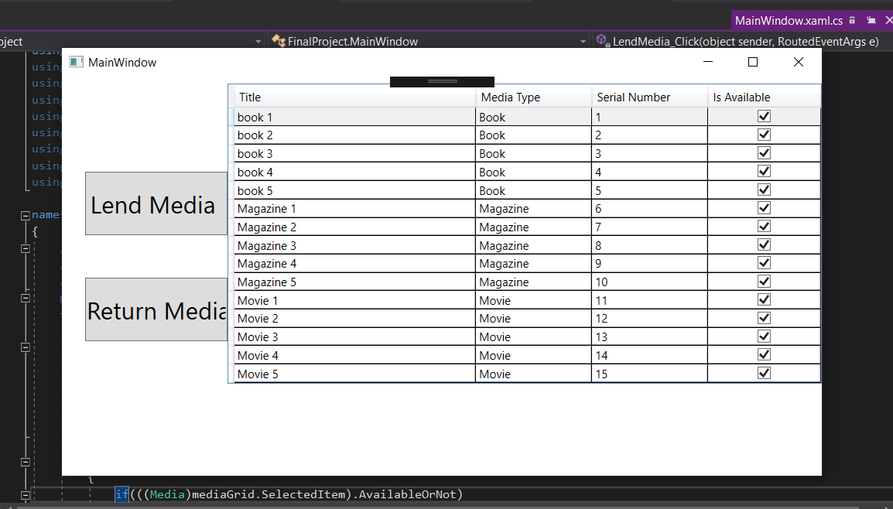

WPF application

• It’s an wpf application that allows user to manage a library
• The following are the features which form the View (or user interface) of the application. These
are
available to the user of the WPF application.
• A DataGrid of all media in the library that shows their title, type, serial number, and whether
they are available or lent out
• The ability to lend out available media
• The ability to have lent media brought back
• A popup that appears whenever media is lent or brought back, which says what has occurred. If
the user tries to lend out an unavailable piece of media or tries to have media brought back that
isn’t lent out, the popup should tell the user what went wrong.